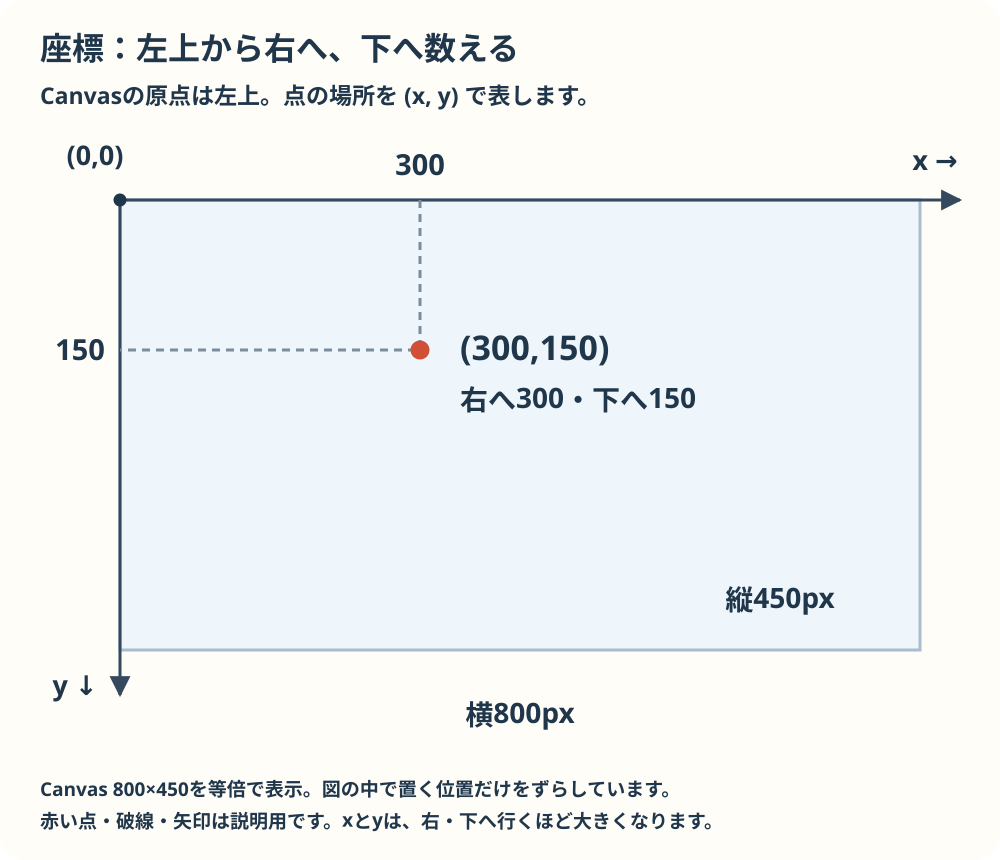
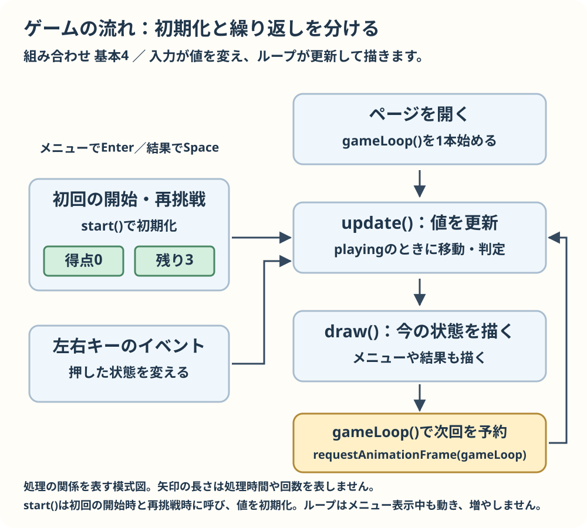

作る前に確かめる基礎
このページは必要になったところから読めます。小さな例を予想して確かめましょう。
文法をもう少し詳しく学びたいときは、HTMLの基本文法、CSSの基本文法、JavaScriptの基本文法から必要なページを選んでください。このページの例は復習として使えます。
コードを試すときは準備と操作の方法でtemplateの3ファイルを新しい練習用フォルダーにコピーし、コピー先のscript.jsを開きます。各例はそれぞれ独立しています。空のstart() { }の波括弧の中を、その例のコード全体に置き換えてください。例を追加し続けず、次を試す前に前の例を消します。保存し、コピー先のindex.htmlを開くか再読み込みし、ブラウザーの開発者ツールのConsoleで結果を見ます。ゲーム画面に文字は表示されません。
3ファイルの役割と座標

座標は左上から数えます。xは右へ、yは下へ行くほど大きくなります。(300,150)は右へ300、下へ150進んだ場所です。
HTMLはCanvasなどの置き場所、CSSはページの見た目、JavaScriptはゲームの動きや描画を受け持ちます。Canvasは左上が(0,0)で、右へx、下へyが増えます。800×450の画面なら(300,150)は左から300、上から150です。
確認： (0,0)はどこ？
Canvasの左上です。
値、変数、条件
let hp = 100;
const maxHp = 100;
hp = hp - 30;
if (hp === 70) {
hp = maxHp;
}
console.log(hp);letの値は後で変えられ、constは別の値を再代入できません。=は代入、===は等しいか比べる記号です。ifの条件が真なら中の処理を実行します。startの中に入れて保存・再読み込みし、Consoleの数値を見ます。
確認：最後のhpは？
100です。30減らした後は70なので条件が真になり、maxHpが代入されます。
関数、配列、オブジェクト
function add(a, b) { return a + b; }
const colors = ["赤", "青", "緑"];
const player = { x: 300, hp: 100 };
const result = add(2, 3);
console.log(result, colors[1], player.x);関数は処理をまとめます。aとbは受け取る引数、returnは返す値です。resultは5になります。配列の番号は0から始まりcolors[1]は「青」です。オブジェクトはplayer.xのように名前で値を取り出します。前の例を消してstartの中に入れ、Consoleに5、青、300が出るか確かめます。
確認：colors[0]とplayer.hpは？
「赤」と100です。
繰り返し、イベント、ゲームの状態

初回の開始や再挑戦ではstartで値を初期化します。ゲームループはupdateで値を更新し、drawで今の画面を描くことを繰り返します。メニュー中も同じ1本のループを使います。
for (let i = 0; i < 3; i += 1) {
console.log(i);
}前の例を消してstartの中に入れ、Consoleで0、1、2を確かめます。キーを押すなどの出来事をイベントとして受け取り、値を変えられます。コインキャッチではstartで初期化し、updateで状態を更新し、drawで描画します。startは初回の準備や再挑戦で呼びます。gameStateのplayingやclearで、処理や表示を切り替えます。
確認：上の繰り返しは何回？
3回です。iが3になると条件が偽になります。
上級への橋渡し
クラスは似たデータと処理をまとめるための書き方です。最初から使う必要はありません。newで作った一つ一つをインスタンスと呼び、それぞれが別の値を持ちます。
設計図から別々の実体を作る流れは脱出ゲームの図でも確認できます。図は本棚と引き出しの例です。
class Player {
constructor(x) { this.x = x; }
move(amount) { this.x += amount; }
}
const a = new Player(100);
const b = new Player(200);
a.move(10);
console.log(a.x, b.x);前の例を消してstartの中に入れ、Consoleを見ます。aだけ動かすので110、200と表示されます。複数の敵などを扱いたくなったら、配列とオブジェクトを読み直してからカードバトルの作例を見ましょう。
確認：bのxが変わらないのはなぜ？
aとbは別のインスタンスで、moveを呼んだのはaだけだからです。